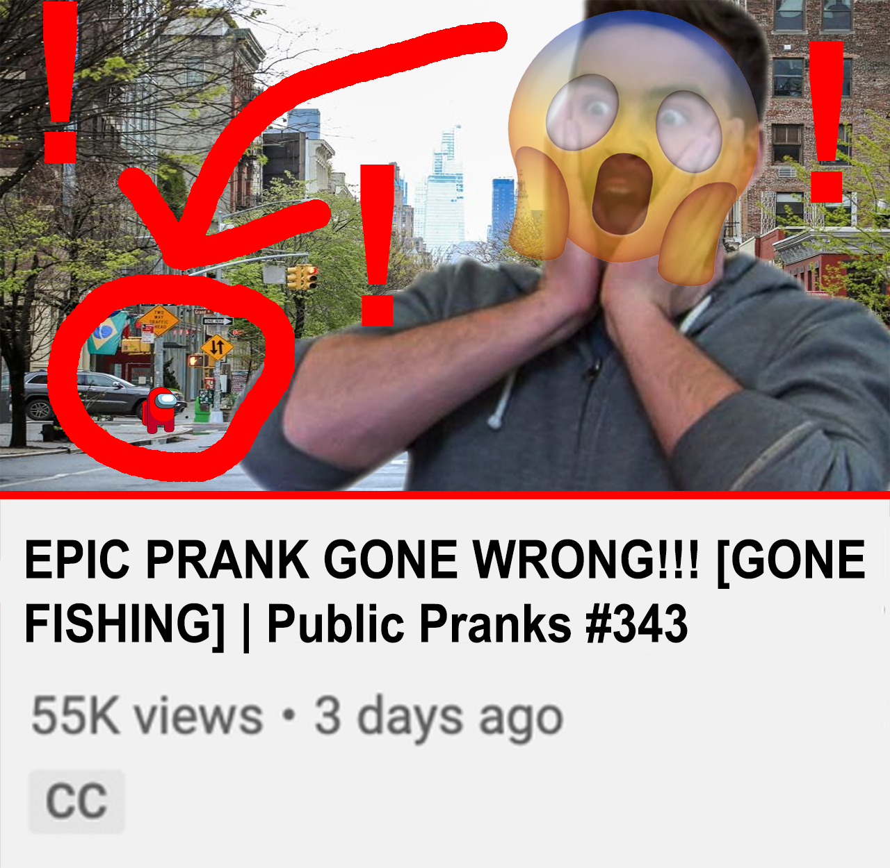
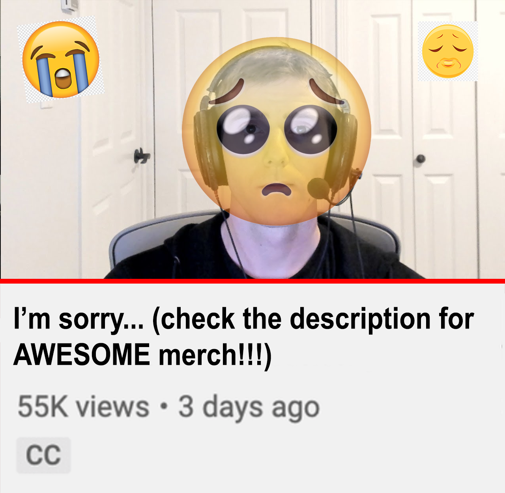

The Notre Dame Cathedral burning down sure is a big disaster, but you know what else is a big disaster? Trying to create your own website. HTML, CSS, PHP, CMS, who has time for that? Unless you're in a really cool WebDev class, that's why you need Squarespace. Squarespace is the easy way to create your very own professional website using simple drag and drop actions, no matter if you're trying to open a digital storefront or finally starting that travel blog you were always talking about. The home page of the Notre Dame most likely wasn't made using Squarespace, but if it was, they could update it to reflect the tragic events on Monday, the 15th of April, with just a few clicks. If you want to give Squarespace a try, they are currently offering a special promo where you can get your own website, AND your very own domain for a free trial month by registering using the promo code squarespace.com/notre.
This video is sponsered by NordVPN. Staying safe online is an ever growing difficulty and you could be exploited by hackers. NordVPN allows you to change your IP address, making you harder to track, securing your privacy. Check out the link in the description to get 20% off for the first two months, and thank you to NordVPN for sponsoring this video.

Whether you're up in the clouds or going way underground, it's easy to take your music with you wherever you go. With Spotify Premium, you can save your favorite songs to your phone and listen offline. That means you can play anywhere, anytime without using any data. And right now, you can try Premium free for 30 days. Ready to make the move? Tap the banner to learn more.
